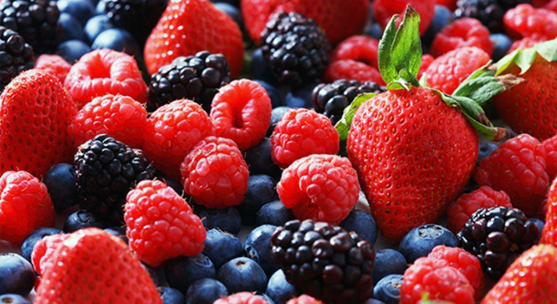

Berries

High in fiber, berries are naturally sweet, and their rich colors mean they are high in antioxidants and disease-fighting nutrients.
How to include them: When berries are not in season, it is just as healthy to buy them frozen. Add to yogurt, cereals, and smoothies, or eat plain for a snack.